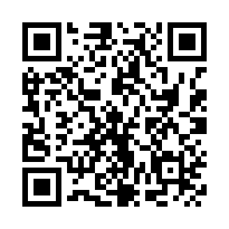

Galatasaray Maç Takvimi
Erkek A takım futbol ve basketbol maçları. Takvim her gün otomatik güncellenir; bir kez abone olmanız yeterli.
Takvime abone ol
Apple Takvim için düğmeyi kullanın. Google Takvim ve Outlook'ta "URL ile takvim ekle" seçeneğine aşağıdaki bağlantıyı yapıştırın.
Tüm maçlar
Galatasaray erkek futbol ve basketbol takımlarının maçları
Takvime abone ol.ics indirgalatasaray-all.icsFutbol
Galatasaray erkek futbol takımının maçları
Takvime abone ol.ics indirgalatasaray-football.icsBasketbol
Galatasaray erkek basketbol takımının maçları
Takvime abone ol.ics indirgalatasaray-basketball.icsSıradaki maçlar
- Cumartesi 26.09.2026 · 18:00Galatasaray - Çayırova Belediyesi
- Cuma 02.10.2026 · 19:00Karşıyaka - Galatasaray
- Cuma 09.10.2026 · 20:00Galatasaray - Kasımpaşa
- Pazartesi 12.10.2026 · 19:00Galatasaray - Bursaspor Basketbol
- Salı 13.10.2026 · 22:00Galatasaray - Barcelona
- Cumartesi 17.10.2026 · 16:00Gençlerbirliği - Galatasaray
- Pazar 18.10.2026 · 20:30Beşiktaş - Galatasaray
- Çarşamba 21.10.2026 · 19:45Lille - Galatasaray
- Pazar 25.10.2026 · 20:30Galatasaray - Pizzabulls Bordo Bandırma
- Pazartesi 26.10.2026 · 21:30Galatasaray - Fenerbahçe
Saati henüz açıklanmamış maçlar, yanlış bir gece yarısı saati yazılmasın diye tüm gün etkinliği olarak gösterilir; saat kesinleşince aynı etkinlik güncellenir.
Projeyi destekle
Takvim ücretsizdir ve öyle kalacak. Beğendiyseniz isteğe bağlı olarak USDT (Tether) ile destek olabilirsiniz; herhangi bir borsa ya da cüzdandan gönderebilirsiniz.

Coin: USDT (Tether)
Ağ: BNB Smart Chain (BSC / BEP-20)
0x315f79cb95f784c18387c3009798d1a617dac8b2
⚠ Yalnızca USDT'yi ve yalnızca BSC (BEP-20) ağı üzerinden gönderin. Başka bir ağdan ya da başka bir coin ile gönderilen tutarlar geri alınamaz.
Son kontrol: yükleniyor…
Kaynaklar: TFF, UEFA ve TBF. Kaynak kod (GitHub)